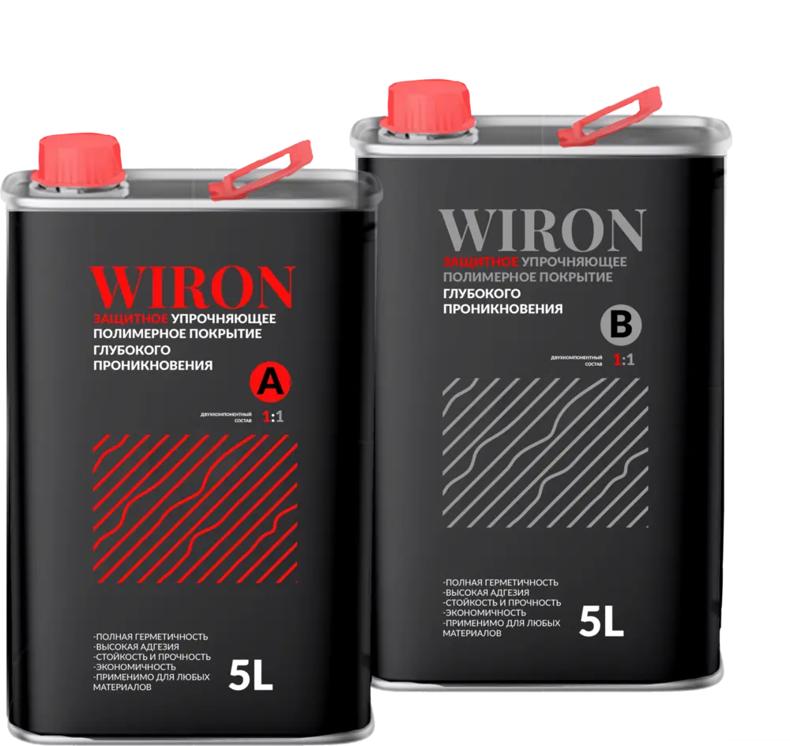

ХИМИЯ, КОТОРАЯ РАБОТАЕТPOLYMER SYSTEM LABS / МАТЕРИАЛЫ

ЗАЩИТА ПОВЕРХНОСТЕЙ / 01
WIRON®
Промышленная защита
ваших инвестиций.
Полимерный состав для защиты и упрочнения оснований, материалов и поверхностей.
- Защита бетона
от воздействий и износа - Промышленные полы
стойкость в эксплуатации - Антикоррозионная защита
- Гидроизоляция
МАТЕРИАЛ.
СИСТЕМА.
РЕЗУЛЬТАТ.POLYMER SYSTEM LABS
СИСТЕМА.
РЕЗУЛЬТАТ.POLYMER SYSTEM LABS
Подробнее о WIRON ↗WIRON / PSL
01 / БРЕНДЫ
Свой материал.
Для каждой задачи.
Четыре направления Polymer System Labs.
Откройте бренд, чтобы узнать о материалах
и их применении.
02 / КАТАЛОГ
Найти материал.
Техническая документация ↗ТЕХНИЧЕСКАЯ ПОДДЕРЖКАНачнём
Начнём
с вашей задачи.
Подбор материала начинается с основания,
условий работы и нужного результата.